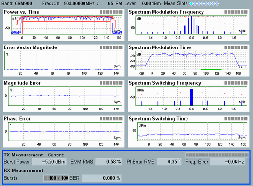
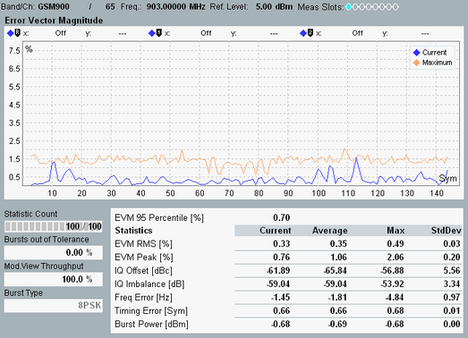

The GSM multi-evaluation measurement dialog shows all results in several alternative views; see detailed description in section "Measurement Results".
The multi-evaluation measurement provides an overview dialog and a detailed view for each diagram in the overview. Each dialog shows the most important RF and analyzer settings. The dialogs also visualize the limit check results.
See also: "Limit Check"
The overview dialog displays the power vs. time, modulation and spectrum results as traces or histograms.

Each of the detailed views shows a diagram and a statistical overview of single-slot results.

To retrieve the values in the traces and histograms, use commands of the following type.
Remote command:To retrieve the additional values in the detailed views, use the following commands.
Remote command: